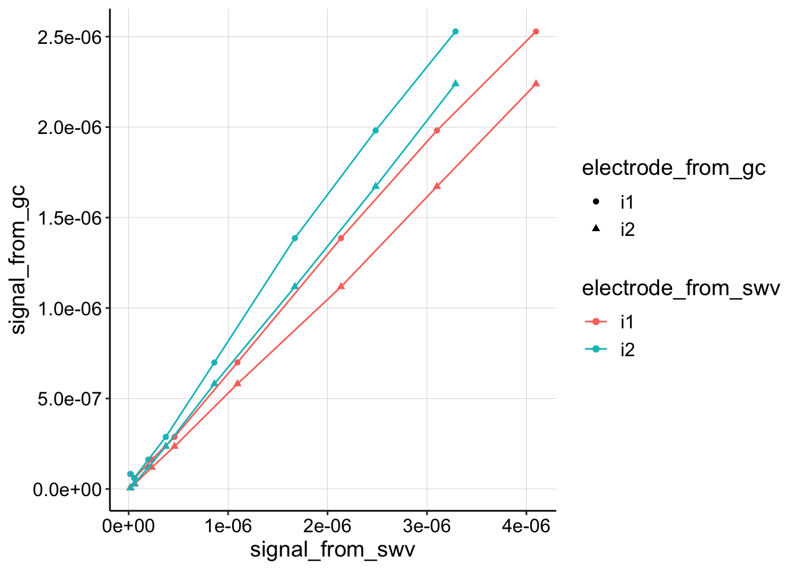
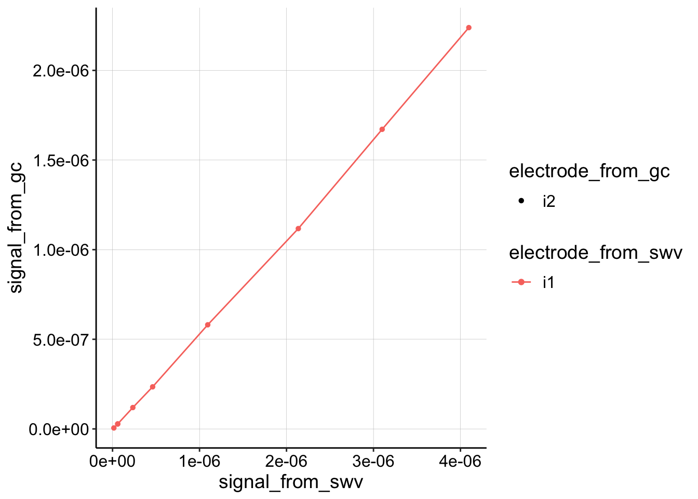
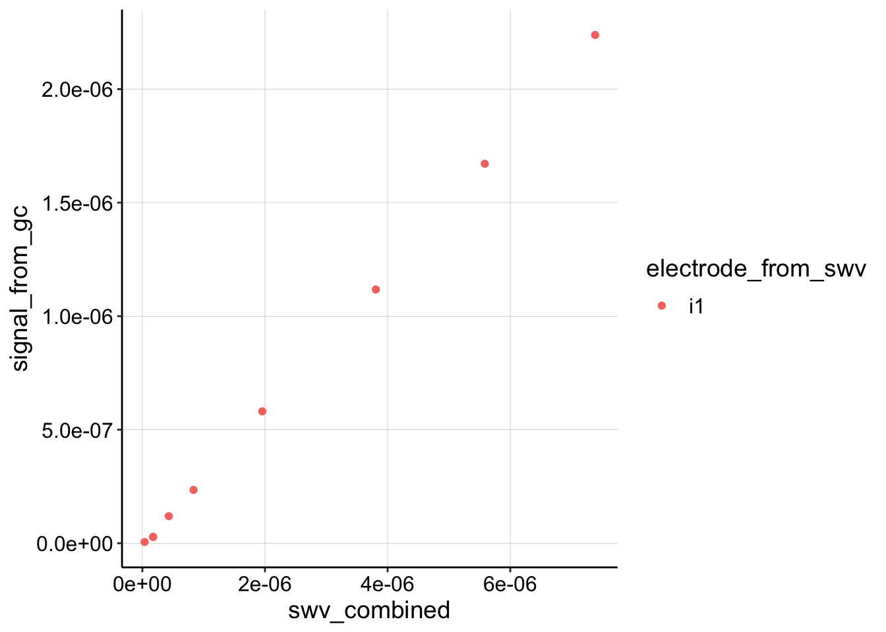
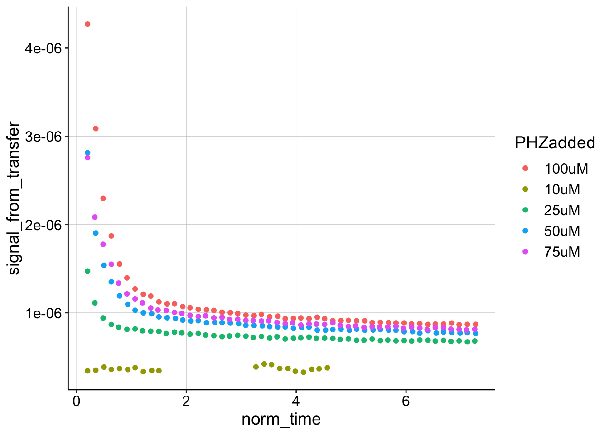
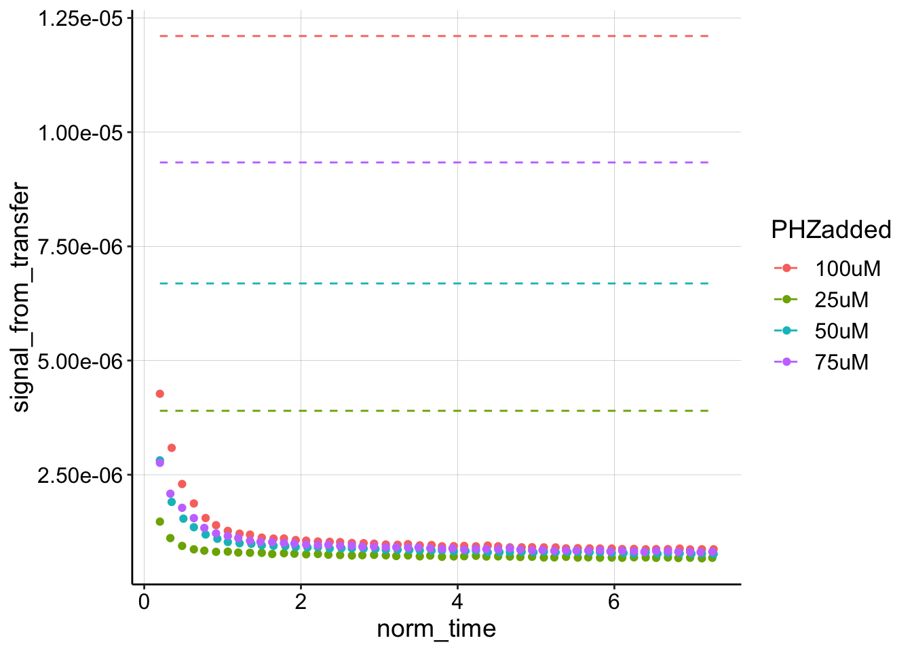
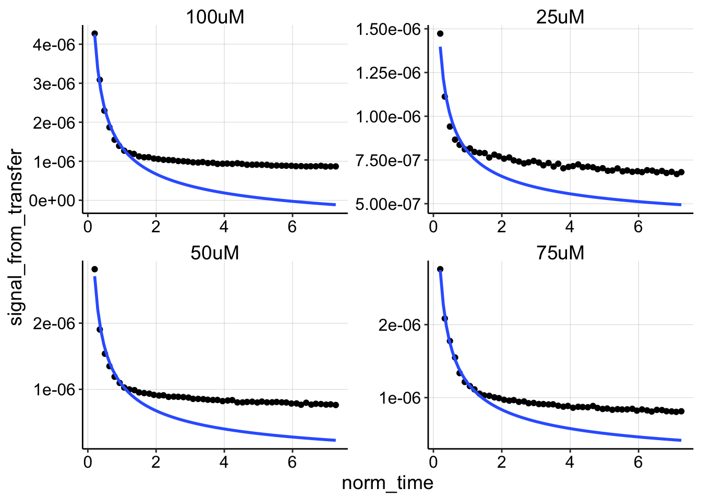
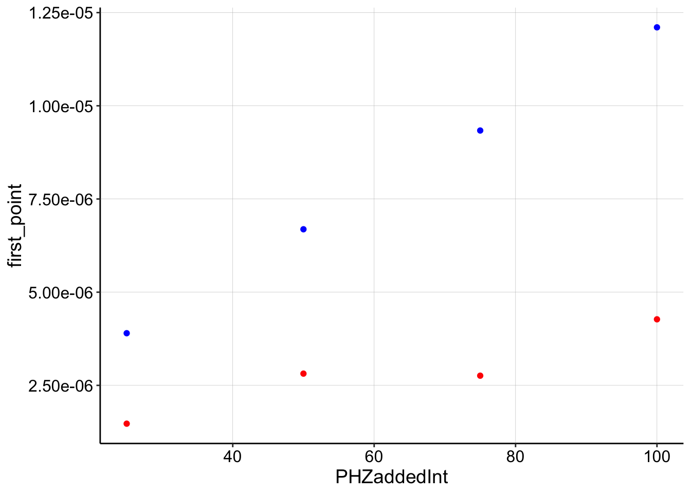
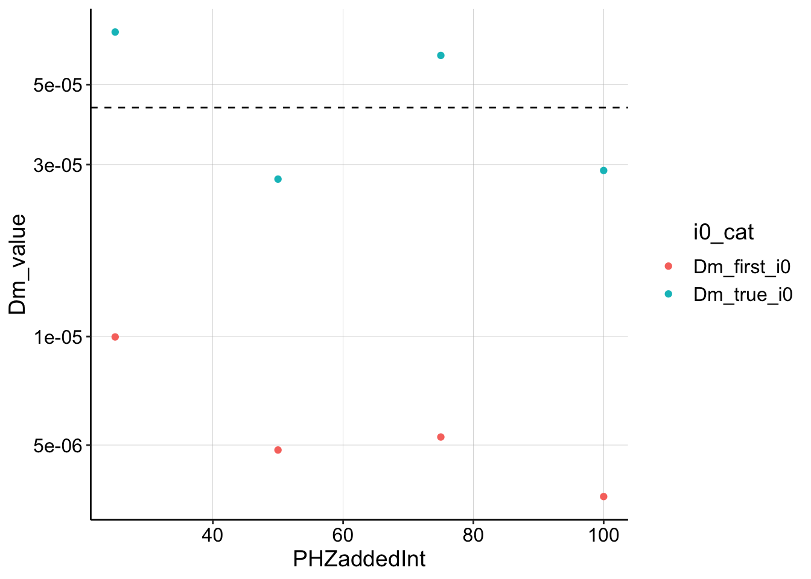

Note the YAML contains specifications for a github document and html. The best way to deal with this is to knit them separately from the knit menu. Otherwise the html has blurry plots and tends to delete the md cached plots unless you tell it to cache everything!
library(tidyverse)
library(cowplot)
library(broom)
library(modelr)
library(viridis)
library(lubridate)
library(knitr)
#knitr::opts_knit$set(root.dir = '/Users/scottsaunders/git/labwork/IDA/12_10_18')
knitr::opts_chunk$set(tidy.opts=list(width.cutoff=60),tidy=TRUE, echo = TRUE, message=FALSE, warning=FALSE, fig.align="center")
theme_1 <- function () {
theme_classic() %+replace%
theme(
axis.text = element_text( size=12),
axis.title=element_text(size=14),
strip.text = element_text(size = 14),
strip.background = element_rect(color='white'),
legend.title=element_text(size=14),
legend.text=element_text(size=12),
legend.text.align=0,
panel.grid.major = element_line(color='grey',size=0.1)
)
}
theme_set(theme_1())
source("../../tools/echem_processing_tools.R")First, let’s look at all the processed data from the soak phase. These are all of the traces comparing the data collected at different electrodes.
swv_gc_soak_data <- read_csv("../Processing/11_28_18_swv_gc_soak_processed.csv")
ggplot(swv_gc_soak_data, aes(x = signal_from_swv, y = signal_from_gc,
color = electrode_from_swv, shape = electrode_from_gc)) +
geom_point() + geom_line()
Nice, they all look pretty similar and very linear, but for convention, let’s just look at the collector from GC (i2) and the i1 from SWV.
swv_gc_soak_data %>% filter(electrode_from_gc == "i2") %>% filter(electrode_from_swv ==
"i1") %>% ggplot(aes(x = signal_from_swv, y = signal_from_gc,
color = electrode_from_swv, shape = electrode_from_gc)) +
geom_point() + geom_line()
Let’s extract a slope and estimate \(D_{ap}\).
swv_gc_soak_combined <- swv_gc_soak_data %>% filter(electrode_from_gc ==
"i2") %>% group_by(PHZadded) %>% mutate(swv_combined = sum(signal_from_swv)) %>%
filter(electrode_from_swv == "i1")
ggplot(swv_gc_soak_combined, aes(x = swv_combined, y = signal_from_gc,
color = electrode_from_swv)) + geom_point()
fit1 <- swv_gc_soak_data %>% filter(electrode_from_gc == "i2") %>%
filter(electrode_from_swv == "i1") %>% lm(signal_from_gc ~
signal_from_swv, .)
# fit1 <- swv_gc_soak_combined %>%
# lm(signal_from_gc~swv_combined,.)
coef(summary(fit1))## Estimate Std. Error t value Pr(>|t|)
## (Intercept) -1.100943e-08 7.067344e-09 -1.557789 1.632422e-01
## signal_from_swv 5.440039e-01 3.723728e-03 146.091185 1.857651e-13m <- coef(summary(fit1))[2]
psi <- 0.91
t_p <- 1/300 # frequency is 300 hz (sec)
A <- 0.025 #cm^2
# A <- 0.05
S <- 18.4 #cm
D_ap <- (m * A * psi)^2/(S^2 * pi * t_p)
paste("D_ap =", D_ap, "cm^2 / sec")## [1] "D_ap = 4.32018640169872e-05 cm^2 / sec"Ok, well that’s a little too fast…but let’s roll with it for now.
# from swv i1 note that 0.2min were added to norm time
swv_decays <- read_csv("../Processing/11_28_18_swv_decays_Processed.csv")
head(swv_decays)## # A tibble: 6 x 29
## PHZadded molecule reactor_from_tr… echem_from_tran… rep
## <chr> <chr> <chr> <chr> <int>
## 1 100uM PYO transfer SWV 1
## 2 100uM PYO transfer SWV 10
## 3 100uM PYO transfer SWV 11
## 4 100uM PYO transfer SWV 12
## 5 100uM PYO transfer SWV 13
## 6 100uM PYO transfer SWV 14
## # ... with 24 more variables: minutes_from_transfer <dbl>,
## # E_from_maxs_from_transfer <dbl>, PHZaddedInt <int>, electrode <chr>,
## # current_from_maxs_from_transfer <dbl>,
## # max_current_from_transfer <dbl>, E_from_mins_from_transfer <dbl>,
## # current_from_mins_from_transfer <dbl>,
## # min_current_from_transfer <dbl>, signal_from_transfer <dbl>,
## # min_time <dbl>, norm_time <dbl>, reactor_from_soak <chr>,
## # echem_from_soak <chr>, minutes_from_soak <dbl>,
## # E_from_maxs_from_soak <dbl>, current_from_maxs_from_soak <dbl>,
## # max_current_from_soak <dbl>, E_from_mins_from_soak <dbl>,
## # current_from_mins_from_soak <dbl>, min_current_from_soak <dbl>,
## # signal_from_soak <dbl>, i0 <dbl>, norm_signal <dbl>ggplot(swv_decays, aes(x = norm_time, y = signal_from_transfer,
color = PHZadded)) + geom_point()
So this looks pretty good, although let’s ignore the 10uM level, since that one was weird. While we’re here, let’s look at these curves compared to their true \(I_0\), which in this case we can assume is the same scan taken in the “soak” step.
ggplot(swv_decays %>% filter(PHZaddedInt > 10), aes(x = norm_time,
y = signal_from_transfer, color = PHZadded)) + geom_point() +
geom_line(aes(y = i0), linetype = 2)
Wow, when we look at it like this, it is clear that the first datapoint is not a reasonable estimate for \(I_0\) at all. Let’s estimate the \(D_m\) given the ‘true’ \(I_0\) from the soak step, and compare to the original approach of estimating \(I_0\) with the first datapoint.
ggplot(swv_decays %>% filter(PHZaddedInt > 10), aes(x = norm_time,
y = signal_from_transfer)) + geom_point() + geom_smooth(data = swv_decays %>%
filter(PHZaddedInt > 10 & rep < 10), method = "nls", formula = y ~
b * (x)^-0.5 + a, method.args = list(start = c(b = 0.1, a = 0)),
se = F, fullrange = TRUE) + facet_wrap(~PHZadded, scales = "free")
nls_fit <- swv_decays %>% filter(PHZaddedInt > 10 & rep < 10) %>%
group_by(PHZadded) %>% do(tidy(nls(., formula = signal_from_transfer ~
m * (norm_time^-0.5) + b, start = list(m = 0.1, b = 0))))
# nls_fit <- swv_decays %>% filter(PHZaddedInt>10) %>%
# group_by(PHZadded) %>%
# do(tidy(nls(.,formula=signal_from_transfer~m*(norm_time^-0.5)+b,
# start = list(m=0.1,b=0))))
nls_fit %>% filter(term == "m")## # A tibble: 4 x 6
## # Groups: PHZadded [4]
## PHZadded term estimate std.error statistic p.value
## <chr> <chr> <dbl> <dbl> <dbl> <dbl>
## 1 100uM m 0.00000234 0.0000000818 28.6 1.64e- 8
## 2 25uM m 0.000000484 0.0000000446 10.9 1.24e- 5
## 3 50uM m 0.00000133 0.0000000641 20.7 1.52e- 7
## 4 75uM m 0.00000125 0.0000000256 48.9 3.91e-10slope_to_Dm <- function(m, D_ap, i0, t_s = 0.1) {
D_m = (i0^2 * D_ap * t_s)/(4 * m^2)
D_m
}
swv_decays_firsts <- swv_decays %>% filter(PHZaddedInt > 10) %>%
group_by(PHZadded) %>% mutate(first_point = max(signal_from_transfer)) %>%
filter(signal_from_transfer == first_point) %>% select(PHZadded,
PHZaddedInt, i0, first_point)
ggplot(swv_decays_firsts, aes(x = PHZaddedInt)) + geom_point(aes(y = first_point),
color = "red") + geom_point(aes(y = i0), color = "blue")
Dm_df <- left_join(nls_fit %>% filter(term == "m"), swv_decays_firsts,
by = c("PHZadded")) %>% mutate(Dm_true_i0 = slope_to_Dm(estimate,
D_ap = D_ap, i0 = i0)) %>% mutate(Dm_first_i0 = slope_to_Dm(estimate,
D_ap = D_ap, i0 = first_point)) %>% gather(key = i0_cat,
value = Dm_value, Dm_true_i0, Dm_first_i0)
ggplot(Dm_df, aes(x = PHZaddedInt, y = Dm_value, color = i0_cat)) +
geom_point() + geom_hline(yintercept = D_ap, linetype = 2) +
scale_y_log10()
Well, this is reassuring on some level. If you provide the model with the correct \(I_0\), it shows that the \(D_m\) blue dots are pretty close to the estimated \(D_{ap}\). However, if you underestimate by using the first datapoint, you underestimate \(D_m\) by about an order of magnitude, which I consistently saw in my previous estimates. So what now??
Could we actually get a good estimate of \(I_0\) by fitting the lm/nls in a certain way??